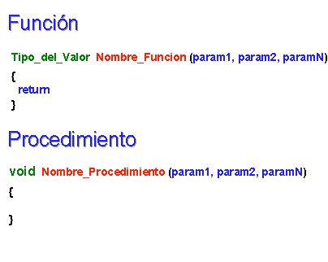

Actividad: Desarrollando programas en Python No. 5: Estatutos de repetición.
info_outline Actividad: Desarrollando programas en Python No. 5: Estatutos de repetición.
Desarrollarás la solución de algunos problemas.
group Modalidad
Individual
check Objetivos de aprendizaje
- Aplicar los conceptos de función y procedimiento, variable global y local.
- Reconocer la importancia del uso de funciones y procedimiento para el diseño de un programa en C.
list Instrucciones
- Analiza cada uno de los ejercicios que se presentan a continuación. Identifica cual sería el algoritmo para la solución de cada uno de los ejercicios.
- Escribe un programa en Python para cada uno de los ejercicios. Recuerda basarte en el algoritmo que generaste.
- Entrega, en la sección de "Envío de Tareas", los archivos que contengan los programas en C.
- La actividad será evaluada usando la siguiente rubrica.
-
Problemas:
Utiliza el siguiente esquema como apoyo para desarrollar tus soluciones:

-
Programa principal:
Crea un programa que importe la bilblioteca que vas a crear
tortugas.hTodas las funciones y procedimientos los desarrollarás dentro de la biblioteca
tortugas.hEn el main(), manda a llamar todas las funciones y procedimientos de la bilioteca:
Primero pide los valores y usando set_pochitoques, set_jicoteas, y set_chiquiguaus asignalos a sus variables correspondientes.
Despues imprímerlos todos mediante el procedimiento imprime_tortugas
Recuerda que la captura de datos y validación de valores debe ser realizada en el main( ), pues las funciones NO pueden realizar las tareas de validación o captura de datos.
-
Biblioteca tortuga.h:
Crea un biblioteca
tortugas.hdonde almacenes las siguientes funciones y procedimientos:Declara 3 variables globales
pochitoques jicoteas chiquiguausEl procedimiento menu que no recibe parámetros e imprime el siguiente menu en pantalla
Introduce el numero de pochitoques, jicoteas y chiquiguausEl procedimiento set_pochitoques que recibe como parámetro un entero y lo asigna a la variable global
pochitoquesEl procedimiento set_jicoteas que recibe como parámetro un entero y lo asigna a la variable global
jicoteasEl procedimiento set_chiquiguaus que recibe como parámetro un entero y lo asigna a la variable global
chiquiguausLa función get_pochitoques que no recibe ningún parámetro y devuelve la variable
pochitoquesLa función get_jicoteas que no recibe ningún parámetro y devuelve la variable
jicoteasLa función get_chiquiguaus que no recibe ningún parámetro y devuelve la variable
chiquiguausEl procedimiento imprime_tortugas que consulta las funciones get de cada tipo e imprime en consola el mensaje:
Hay 10 pochitoques 15 jicoteas 2 chiquiguausIncluye el algoritmo como comentario al inicio del programa.
-
Programa Abierto:
Crea una biblioteca con las funciones que hiciste para el pograma abierto de funciones (si no lo hiciste crea uno nuevo) e integra en la biblioteca nueva funcionalidad usando al menos 3 procedimientos que mandes a llamar más de una vez en el main de otro programa sube tanto el .h como el .c a Blackboard.
Este programa es tuyo, úsalo para hacer cosas interesante y retadoras no cosas fáciles.
offline_pin Especificaciones de entrega
Los archivos (el .c y el .h de cada programa) deberán ser entregados a través de la sección de "Envío de Tareas" de Blackboard los programas tienen que llevar por nombre tu matricula y el número de ejercicio e.g. "A008829001.c", "tortugas.h".